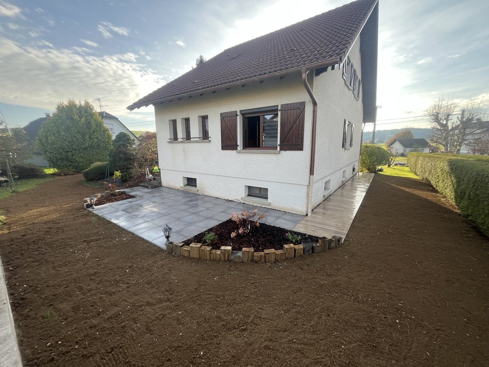
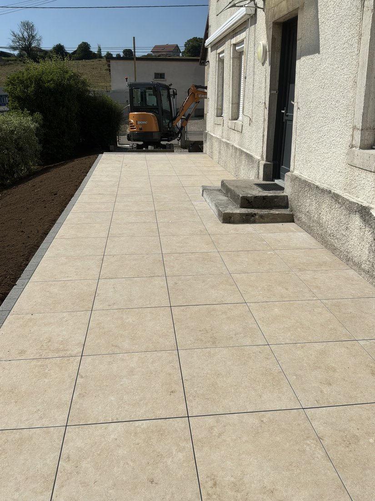
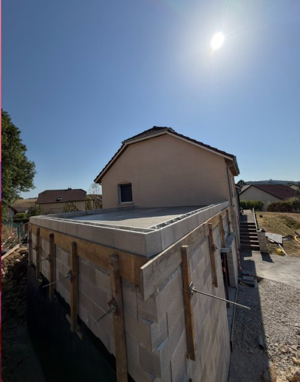
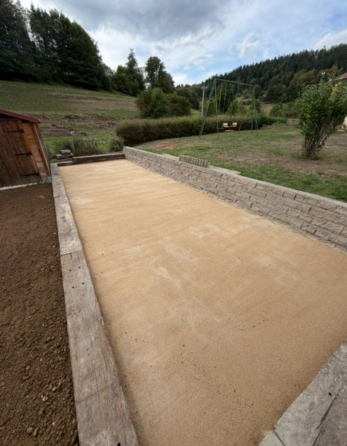
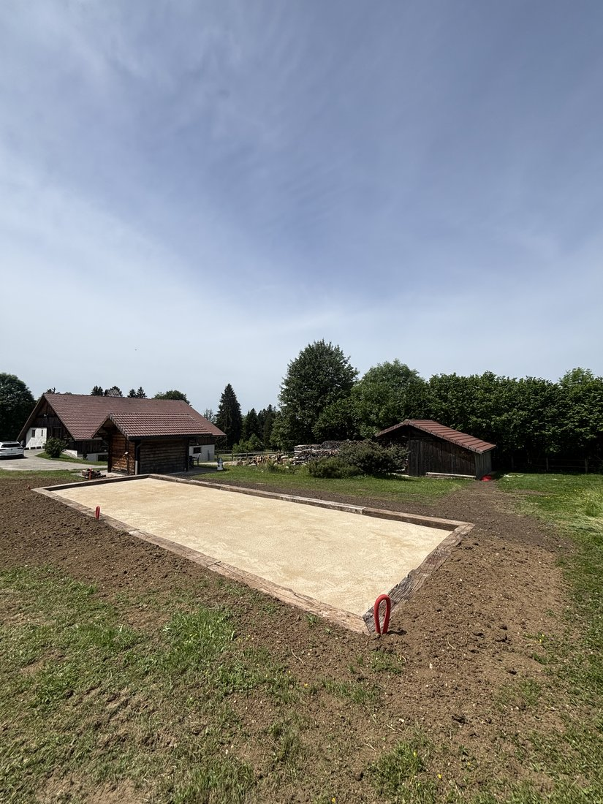
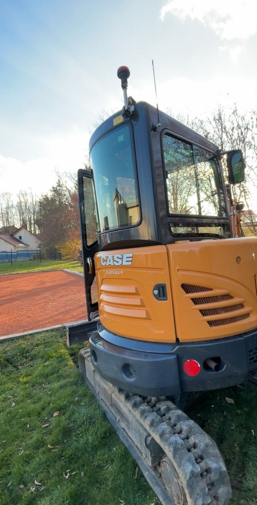
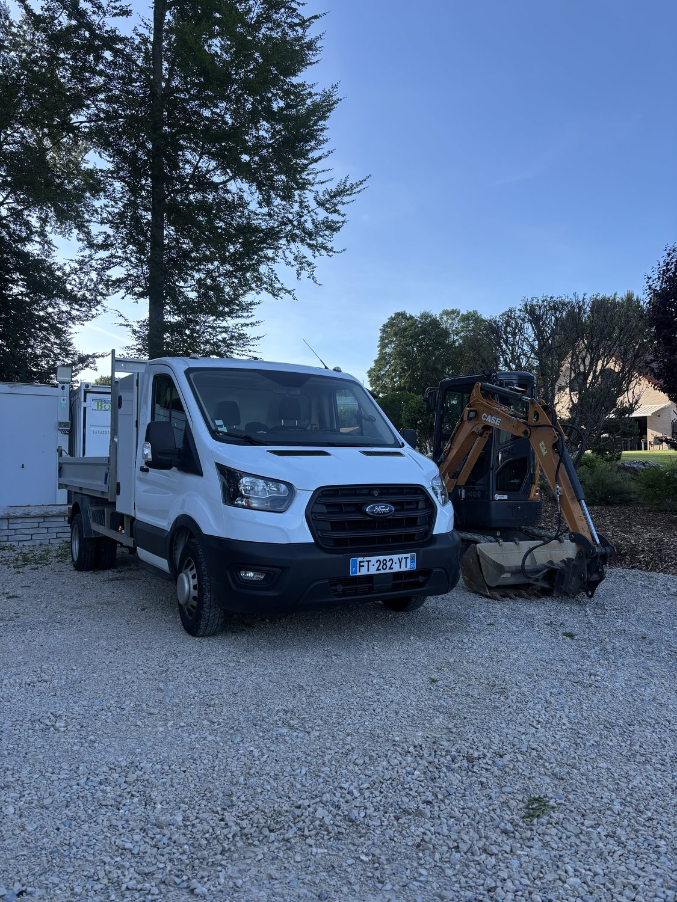

Joset TP intervient chez les particuliers pour tous vos travaux extérieurs : terrassement, aménagement extérieur, terrasses, allées et création de terrains de pétanque. Devis gratuit sous 48h.
Décaissement, nivellement, remblai, fondations — tous vos travaux de terrassement pour particuliers.
Terrasses, dallages, allées, cours et murets pour embellir et valoriser vos extérieurs.
Murets, murs de clôture, murs de soutènement, dalles béton et escaliers extérieurs.
Création de terrains de pétanque sur mesure : terrassement, bordures et surface de jeu soignée.
Joset TP réalise tous vos aménagements extérieurs pour embellir et valoriser votre propriété : terrasses, dallages, allées, cours et murets. Un travail soigné, du terrassement jusqu'aux finitions.
Création de terrasses dallées, pose de carrelage extérieur et mise en valeur de vos abords avec des matériaux durables et esthétiques.
Réalisation d'allées, de cours et de murets de soutènement en pierre ou en blocs, pour un extérieur fonctionnel et soigné.






Le terrassement est la première étape indispensable de tout projet de construction ou d'aménagement extérieur. Joset TP intervient avec des engins adaptés à la taille de votre chantier pour préparer votre terrain dans les règles de l'art.
Grâce à notre expérience de plus de 15 ans dans le secteur, nous maîtrisons toutes les techniques de terrassement pour les particuliers, des petits jardins aux grands terrains agricoles.

Joset TP réalise vos travaux de maçonnerie extérieure pour les particuliers : murets, murs de clôture, murs de soutènement, dalles béton, escaliers et fondations. Un travail solide et soigné, dans le respect des règles de l'art.
Du petit muret décoratif au mur de soutènement technique, nous mettons notre savoir-faire au service de la durabilité et de l'esthétique de vos ouvrages.
Envie d'un terrain de pétanque chez vous ? Joset TP réalise votre boulodrome sur mesure, du terrassement à la surface de jeu finie, pour profiter de vos parties entre amis ou en famille.
Nous nous occupons de tout : décaissement de la zone, mise en place des bordures, pose des différentes couches (tout-venant, stabilisé, gravillons) et nivellement parfait pour une surface de jeu régulière et durable.
Nous définissons ensemble l'emplacement et les dimensions de votre terrain, puis établissons un devis gratuit.
Décaissement de la zone et préparation du fond de forme avec nos engins adaptés.
Pose des bordures puis mise en place des couches de fondation et de la surface de jeu.
Nivellement, compactage et aménagement des abords. Votre terrain est prêt à jouer !
Vous avez fait appel à Joset TP pour vos travaux ? Votre avis est précieux pour nous et pour les futurs clients. Déposez votre avis directement sur Google en cliquant ci-dessous.
Laisser un avis GoogleLes avis seront visibles directement sur votre fiche Google Business.
Joset TP est basé à Charquemont (25140) dans le Doubs et intervient dans un rayon de 20 km autour de son siège.
Décrivez votre projet et nous vous recontactons rapidement pour convenir d'un rendez-vous sur site. L'estimation est entièrement gratuite et sans engagement.
* Champs obligatoires — Réponse garantie sous 48h
⚠️ Modèle à compléter avec les informations réelles de l'entreprise (SIRET, forme juridique, hébergeur…) avant la mise en ligne définitive.
Le présent site est édité par :
Joset TP — Terrassement, VRD, Aménagement
Adresse : 4 rue Lamarck, 25140 Charquemont, France
Téléphone : 06 XX XX XX XX
Email : contact@tp-joset.fr
Forme juridique : [à compléter — ex : SARL, EI, auto-entrepreneur]
Capital social : [à compléter le cas échéant]
SIRET : [à compléter]
Numéro de TVA intracommunautaire : [à compléter]
Responsable de la publication : [Nom du gérant]
Ce site est hébergé par :
GitHub Pages — GitHub, Inc.
88 Colin P. Kelly Jr. Street, San Francisco, CA 94107, États-Unis
(À adapter si le site est déplacé vers un autre hébergeur.)
L'ensemble des éléments présents sur ce site (textes, logo, images, mise en page) est la propriété de Joset TP, sauf mention contraire. Toute reproduction, représentation ou diffusion, totale ou partielle, sans autorisation écrite préalable, est interdite et constituerait une contrefaçon au sens des articles L.335-2 et suivants du Code de la propriété intellectuelle.
Les informations recueillies via le formulaire de demande de devis (nom, prénom, téléphone, email, description du projet) font l'objet d'un traitement destiné uniquement à répondre à votre demande. Elles sont transmises exclusivement à Joset TP et ne sont ni vendues, ni cédées à des tiers.
Conformément au Règlement Général sur la Protection des Données (RGPD) et à la loi « Informatique et Libertés », vous disposez d'un droit d'accès, de rectification, d'opposition et de suppression des données vous concernant. Pour exercer ce droit, contactez-nous à l'adresse : contact@tp-joset.fr.
Les données transmises via le formulaire sont traitées par le service Formspree. Elles sont conservées le temps nécessaire au traitement de votre demande.
Ce site utilise la cartographie OpenStreetMap (via Leaflet) pour afficher la zone d'intervention. La consultation du site n'implique pas de dépôt de cookies publicitaires ou de traçage. Les éventuels cookies techniques servent uniquement au bon fonctionnement de l'affichage.
Joset TP s'efforce d'assurer l'exactitude des informations diffusées sur ce site. Les estimations de délais, prestations et zones d'intervention sont fournies à titre indicatif et ne constituent pas un engagement contractuel. Seul un devis signé fait foi.